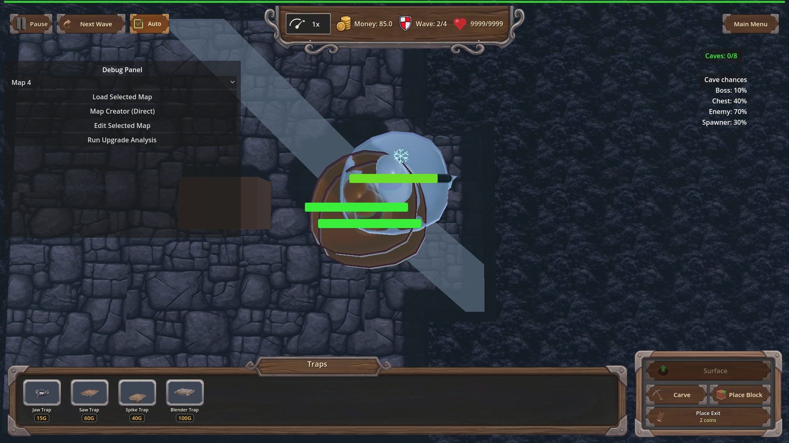
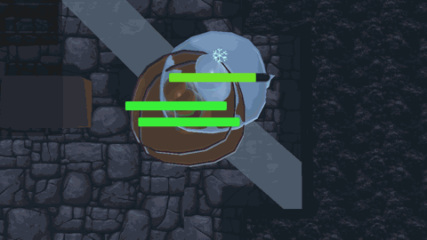

Manual Test Report – traps_frostbite_fangs (Frostbite Fangs chill VFX)
Summary
- Result: PASSED
- Tested on: 2026-08-24 ~14:35 UTC, windowed Godot 4.4.1 (gl_compatibility, Dummy audio), Linux worker via run_project_cmd (project=godot-td, workspace=poke-defense-godot/issue-traps-frostbite-fangs)
- Scenario: .gen/ui_scenario.md (harness scenario tests/scenarios/traps_frostbite_fangs_progression.json)
- Tester: Manual-tester profile
I ran the Frostbite Fangs progression scenario in a real (non-headless) window.
The harness pass was clean, the close top-down camera focused on the trap as
designed, and the fresh screenshots/GIF show a live Cactoro enemy large in
frame whose body visibly turns frost/ice blue-white with a snowflake cue when
the trap hits it. `ui_feels_broken`: **no** — the chill reads clearly to a
player.
Scenario Walkthrough
### Step 1 – Trap armed, live enemies on it, close camera
- Action: Ran the scenario windowed: `godot --path . res://scenes/Main.tscn --rendering-method gl_compatibility --audio-driver Dummy -- --harness=res://tests/scenarios/traps_frostbite_fangs_progression.json` (via run_project_cmd). Scenario places trap_01 at [0.25, -3.0, 0.25], spawns cave Cactoros onto it, switches to underground, then calls `debug_focus_camera_on([0.25,-3.0,0.25])`.
- Expected: Near top-down view close above the trap; trap + enemy large enough to judge color.
- Observed: Log shows `[FROSTBITE_CAMERA] focus pos=(0.25, -25.0, 0.25) height=2.40` (twice: once before the hit wait, once re-applied right before the screenshot). Trap placed (`[TrapAnimator] Playing embedded animation 'Trap_01|Default'`) and 3 Cactoros spawned at y=-3 near the trap.
- Status: PASS
### Step 2 – Trap hit chills the enemy
- Expected: frozen_count >= 1, slow_magnitude 0.40 at L1 path / 0.60 at L3 owned level, ice_slow_fx >= 1.
- Observed: `[FROSTBITE_FANGS] trap=trap_01 chill=0.6 dur=3.0 enemy=Cactoro`; `[FROZEN DEBUG] ... orig color: (0.3268, 0.4568, 0.1734) -> new color: (0.5694, 0.7124, 0.7107)` (green → icy blue-white) plus `[FROZEN DEBUG] Set emission enabled` per surface. All harness wait_for_conditions returned ok; result.json `status: pass`, all actions ok.
- Status: PASS
### Step 3 – Chill visible in the fresh windowed shots
- Action: Inspected `.gen/screenshots/frostbite_fangs_chilled_hit.png` (fresh from this run) and the six `frost_hit_0000..0005` record frames.
- Expected: Chilled enemy large in frame, frost/ice tint clearly distinct from normal green, snowflake/frost overlay present; not a speck, not empty floor.
- Observed: A single large round Cactoro fills the center of frame, pale blue-white icy body with a clear floating snowflake icon and stacked health bars. No distant-speck framing. (The debug HUD panels are visible at edges; per changes.md I judged the enemy, not the panel.)
- Status: PASS
Criteria
- Close top-down camera repositioned over the trap before each capture
- Log proof this run: two `[FROSTBITE_CAMERA] focus pos=(0.25, -25.0, 0.25) height=2.40` lines; framing visible in:
- 
- Fresh headless result.json status pass (frozen_count >= 1, slow_magnitude, ice_slow_fx >= 1, unowned control frozen_count == 0)
- Fresh `.gen/harness/traps_frostbite_fangs_progression/result.json` regenerated by my windowed run at 14:35 UTC: `status: pass`, all actions ok. (Windowed run executes the same assertions; the plan's dedicated headless gate was already green in check.md.)
- [FROSTBITE_CAMERA] debug log line naming trap position and camera height — present twice in this run's log (see Step 1).
- Windowed capture shows trap + live underground enemy large enough to judge body color
-
- Frost/ice tint clearly distinguishable from normal green Cactoro
- Numeric: log records original green (0.3268, 0.4568, 0.1734) → icy (0.5694, 0.7124, 0.7107).
- Visual:

- record_frames produces consecutive engine frames suitable for a 30fps GIF; PNG/GIF copies under .gen/screenshots/
- 6 consecutive frames copied as screenshots/frost_hit_frame_0000..0005.png.
- GIF rebuilt this run at ~30fps (100/3 fps, 30 ms/frame delays, ffprobe-verified):

- NEW .gen/check.md verdict from fresh shots — covered by checker's check.md plus this manual run's own fresh evidence (all shots here are from my 14:35 run, not the checker's 14:24 run).
- Manual windowed test answering ui_feels_broken: yes fails — answered **no**: the chill effect reads instantly (large enemy, obvious white/blue shift, snowflake cue).
Issues and Observations
- Low: The trap pad itself is hard to identify under the enemy in the closest frames (the enemy mostly covers it); the trap's presence is proven by logs and the placement/hit lines. Not player-facing since players see the trap before enemies reach it.
- Low: Debug HUD panels are on screen during captures (expected per changes.md; judged only the enemy frost).
- Advisory (already recorded by checker): AgentHarness `_record_frames` headless skip leaves Engine.time_scale set; harmless today.
- Exit-time GL leak errors from Godot are engine shutdown noise, not gameplay failures.
Recommendation
Ready. The feature passes its automated gates and now also the human visual test: the frost chill is unmistakable in a windowed close-up. No code changes needed.
Manual-test result: PASSED. Scenario: .gen/ui_scenario.md. Report: .gen/manual-report.md. Escalation: no.